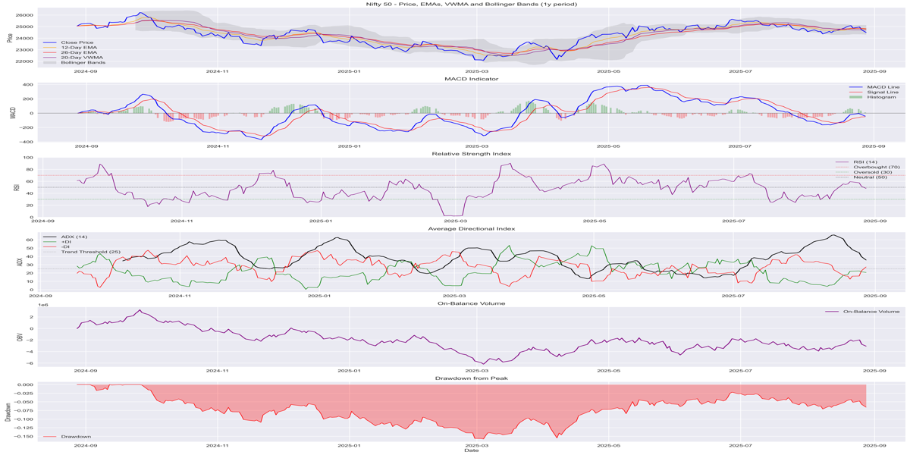

Professional Summary
Quantitative data scientist and algorithmic trading enthusiast with expertise in Python-based analytics pipelines, financial data modeling, backtesting, and machine learning for time-series forecasting. Experienced in feature engineering, reproducible ML workflows, and portfolio-level strategy evaluation. Demonstrates ability to implement statistical tests, risk metrics, and automation to support data-driven investment decisions. Future work includes transaction-cost modeling, vectorized backtesting, and automated PDF/Excel reporting for enhanced production-readiness.
🚀 View My ProjectsExperience
Freelance Quantitative Data Scientist & Digital Strategist
Jan 2012 - Present
-
Developed end-to-end financial analytics pipelines and ML models.
Implemented feature engineering, technical indicators, and time-series models (Random Forest, lag features, volatility indicators) to generate actionable trading signals.
-
Built automated data ingestion, cleaning, and reporting pipelines.
Ensured reproducibility by saving models, reports, and experiment logs in CSV, SQLite, and Excel formats.
-
Performed backtesting and risk analysis.
Computed equity curves, drawdowns, Sharpe ratios, and statistical validations for multiple time horizons, highlighting potential strategy performance.
Team Lead – NEDGE Technologies
Apr 2016 - Apr 2024
-
Led team to improve data quality and analytics automation.
Implemented validation checks, reproducible workflows, and dashboards to enhance operational efficiency and ensure accurate decision support.
-
Built and deployed KPI dashboards and experiment logs.
Tracked performance metrics and maintained versioned experiment records to ensure clarity and reproducibility for stakeholders.
-
Optimized algorithmic workflows and client-facing data products.
Delivered actionable insights from historical and ML-modeled market data to improve trading strategy evaluation and risk management.
Key Projects
Comprehensive Nifty50 Analytics Pipeline
End-to-end Python pipeline for Nifty 50: data ingestion, validation, and storage (CSV, Excel, SQLite), with advanced technical indicators, GARCH/EWMA volatility modeling, feature engineering, and ML-based predictive modeling. Includes backtesting with transaction costs & slippage, performance metrics, visualizations, and reproducible experiment logging. Designed for scalability, reproducibility, and detailed analytics reporting.

Comprehensive Nifty50 Analytics Pipeline (improoved)
End-to-end Python pipeline for Nifty 50: data ingestion, validation, and storage (CSV, Excel, SQLite), with advanced technical indicators, GARCH/EWMA volatility modeling, feature engineering, and ML-based predictive modeling. Includes backtesting with transaction costs & slippage, performance metrics, visualizations, and reproducible experiment logging. Designed for scalability, reproducibility, and detailed analytics reporting.